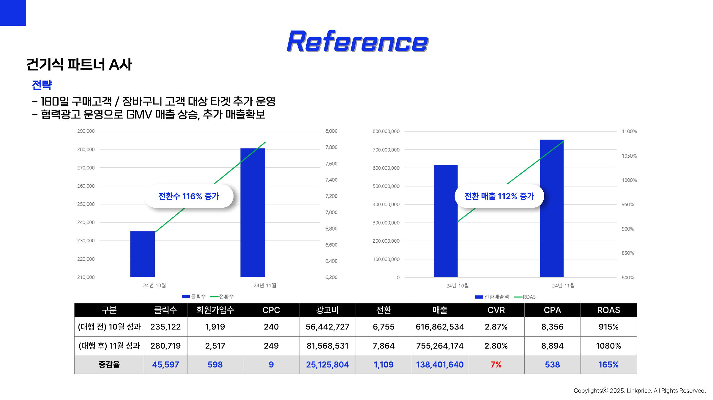
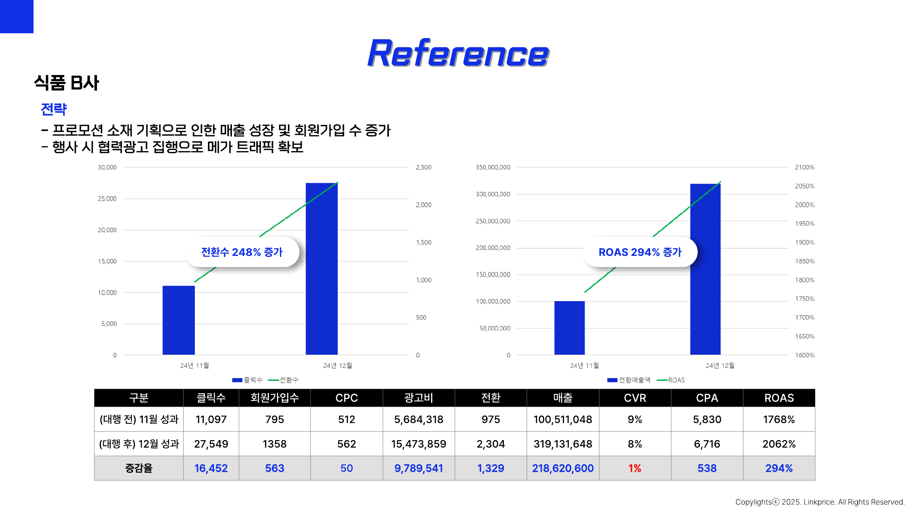
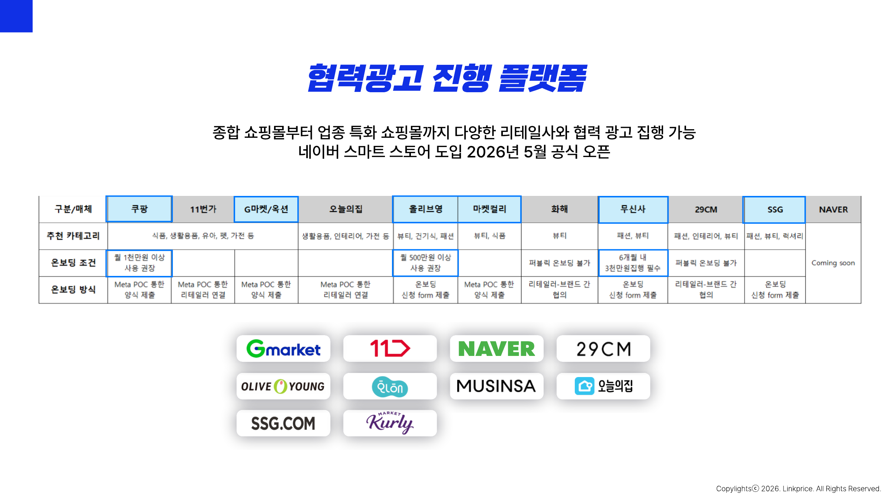
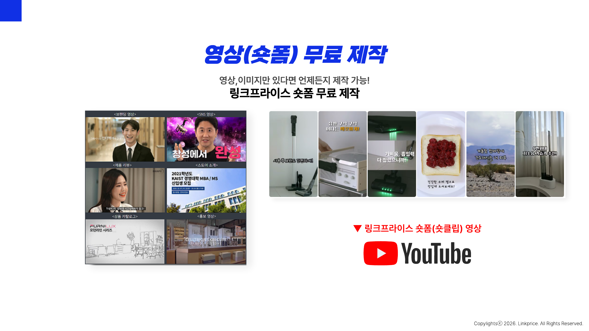

외부몰의 구매 데이터를
Meta 광고 성과로 연결합니다.
브랜드와 리테일 플랫폼을 연결해, 외부 판매 채널의 상품·전환 데이터를 기반으로 광고를 운영하는 Meta 협력광고 제안서
협력광고는 이미
성과로 검증되고 있습니다.

프로모션과 결합하면 전환 볼륨과 ROAS를 함께 확장할 수 있습니다.

오늘 제안드릴 내용
외부몰 판매 구조에서 생기는 데이터 단절을 해결합니다.
리테일 카탈로그 세그먼트와 전환 측정 구조를 설명합니다.
플랫폼·프로모션·타겟 관점의 실행 전략을 제안합니다.
세팅부터 디자인·숏폼·리포트까지 실행을 지원합니다.
외부몰 매출이 커질수록
광고 데이터는 더 많이 끊깁니다.
브랜드가 Meta에서 광고해도 실제 구매가 리테일 플랫폼에서 일어나면, 일반 캠페인만으로는 구매 신호를 충분히 연결하기 어렵습니다. 협력광고는 이 간극을 줄이는 구조입니다.
쿠팡·G마켓·올리브영 등 외부 판매 비중이 높아질수록 리테일 전환 데이터의 중요도가 커집니다.
리테일 파트너가 공유한 카탈로그 세그먼트를 활용해 해당 판매처의 구매를 목표로 캠페인을 운영할 수 있습니다.
상품 클릭 이후 발생한 구매·매출·ROAS 등 협력광고 성과를 별도 지표로 확인할 수 있습니다.
Meta 협력광고란?
브랜드가 리테일 파트너의 상품 카탈로그 세그먼트를 공유받아 Meta 광고를 집행하고, 광고 클릭 이후 리테일 사이트 또는 앱에서 발생한 구매 성과까지 연결해 측정하는 광고 방식입니다.
일반 외부몰 광고와
결정적으로 다른 점
- 외부몰 랜딩 가능
- 브랜드가 리테일러 픽셀을 직접 보유하지 않음
- 구매 전환 최적화·측정에 제약
- 클릭·트래픽 중심 분석
- 리테일러가 브랜드 상품 카탈로그를 공유
- 리테일 플랫폼에서 발생한 전환 신호 활용
- 구매 목적 최적화 가능
- 브랜드 상품의 구매·매출·ROAS 측정 가능
협력광고의 핵심은
‘카탈로그 세그먼트 + 전환 신호’입니다.
리테일 플랫폼이 보유한 전체 상품 카탈로그가 기반이 됩니다.
해당 광고주의 상품만 Catalog Segment로 구성해 공유합니다.
공유된 세그먼트를 선택해 협력광고 캠페인을 생성합니다.
리테일몰에서 발생한 전환·매출 신호를 캠페인 성과로 확인합니다.
카탈로그 세그먼트란?
리테일러의 전체 상품 카탈로그 안에서 특정 브랜드 또는 상품 그룹만 분리한 광고용 상품 집합입니다.
리테일 플랫폼에서 제공되는 전체 제품
광고주의 브랜드 상품만 별도 세그먼트로 구성
캠페인 목적에 따라 상품군을 세분화해 운영 가능
▦ ▦ ▦ ▦
▦ ▦
광고주가 얻는
3가지 핵심 이점
구매가 실제로 일어나는 판매처로 직접 유입을 만들어냅니다.
외부몰 트래픽에 머무르지 않고 구매 성과를 목표로 최적화합니다.
협력광고 전용 지표를 통해 상품 판매·매출·ROAS를 분석합니다.
이런 브랜드라면
협력광고 우선 검토를 추천합니다.
자사몰보다 쿠팡·오픈마켓·버티컬몰 판매 비중이 높은 경우
프로모션 기간 동안 특정 리테일러의 판매량을 집중적으로 확대해야 하는 경우
단순 유입보다 실제 외부몰 구매까지 연결해 평가하고 싶은 경우
자사 픽셀만으로 학습량을 확보하기 어려워 리테일 파트너 데이터 활용이 필요한 경우
다양한 리테일 채널에서
협력광고 운영이 가능합니다.
실제 진행 전 브랜드 카테고리, 월 집행 규모, 리테일러 입점 여부를 기준으로 가능 여부를 확인합니다.
기존 제안서 플랫폼 표 보기

협력광고는 ‘항상 켜두는 광고’보다
판매 이벤트와 연결할 때 더 강력합니다.
핵심 SKU 중심으로 구매 학습 데이터 축적
리테일 이벤트 기간 예산·소재 집중
성과가 확인된 상품군 중심으로 세그먼트 확대
클릭이 아니라
‘판매 결과’로 판단합니다.
Meta는 협력광고 캠페인에서 도달·노출·클릭·전환·ROAS 및 카탈로그 세그먼트 상품의 구매가치 등 관련 지표를 확인할 수 있도록 안내하고 있습니다.
Linkprice는 복잡한 절차를 줄이고
광고에 필요한 과정만 진행합니다.
광고 집행만이 아니라
실행에 필요한 제작까지 지원합니다.
판매처·프로모션·상품군별 운영 플랜
캠페인 생성, 예산 배분, 성과 최적화
광고 전문 디자이너를 통한 맞춤 소재 제작
이미지·영상 소스 기반의 숏폼 콘텐츠 제작 지원
주·월간 핵심 지표 및 인사이트 제공
효율 SKU·리테일러·캠페인 확장 제안
성과를 위한 소재,
제작 부담까지 줄입니다.
마케터와 직접 협업해 캠페인 목적에 맞는 광고 소재를 제작합니다.
집행 데이터를 바탕으로 반응이 좋은 표현과 구성을 다음 소재에 반영합니다.
행사·상품·혜택 변경에 맞춰 광고 소재를 빠르게 업데이트합니다.
별도 디자인 인력 부담 없이 광고 운영에 필요한 소재 제작을 지원합니다.
이미지와 영상만 있다면
숏폼 제작까지 지원합니다.
제품 컷·사용 장면·기존 영상 소스를 활용해 Meta 광고에 활용할 수 있는 짧은 세로형 콘텐츠를 제작합니다.

협력광고 시작 전
이 4가지만 확인하면 됩니다.
현재 판매 중인 리테일 플랫폼 확인
광고로 키우고 싶은 SKU / 카테고리 선정
플랫폼별 온보딩 조건 확인을 위한 규모 파악
특가·신제품·브랜드데이 등 판매 이벤트 확인
운영은 더 단순하게,
성과 분석은 더 깊게.
데이터를 기반으로 분석하고, 트렌드를 반영한 미디어믹스를 제안하며, 광고주와 지속적으로 소통하겠습니다.
우리 브랜드도
협력광고가 가능할까요?
판매 중인 리테일 플랫폼과 월 광고 규모만 알려주세요.
Linkprice가 진행 가능 여부부터 운영 구조까지 빠르게 검토해드립니다.